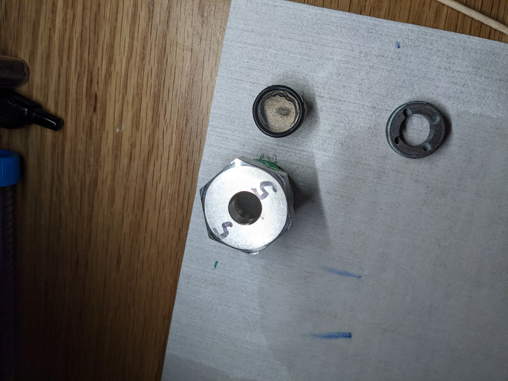

Maintenance
These operations are more advanced than is typical for the average user, and generally should be performed with caution.
Laser Optics
Focusing the beam
Aligning the beam
Translators
Aligning the adapter pieces
Aligning the sealing surface
Issues with translation speed
Chamber
Installing new windows
Melting of O-rings

Preparing a new chamber
Deep cleaning the chamber
Leak checking the chamber
Chiller
Antibioloical treatment
Replacing the cooling water
Cooling lines
Repairing the cooling lines
Gas manifold
Replacing the gas bottle
Swagelok tubing (low-pressure)
Maxpro tubing (high-pressure)
Leak checking
Compressor
Repairing the pressure seals
Structural frame
Positioning / aligning the chamber
Counter weights and pulleys
Updating this website
Mkdocs
GitHub
Hardware Communications
Connecting the Laser Units to the Laser Controller Computer
Cable diagram
LAN / IP Configuration
Connecting the thermocouple reader
Connecting the pyrometer
Connecting the camera
Connecting to the MFC